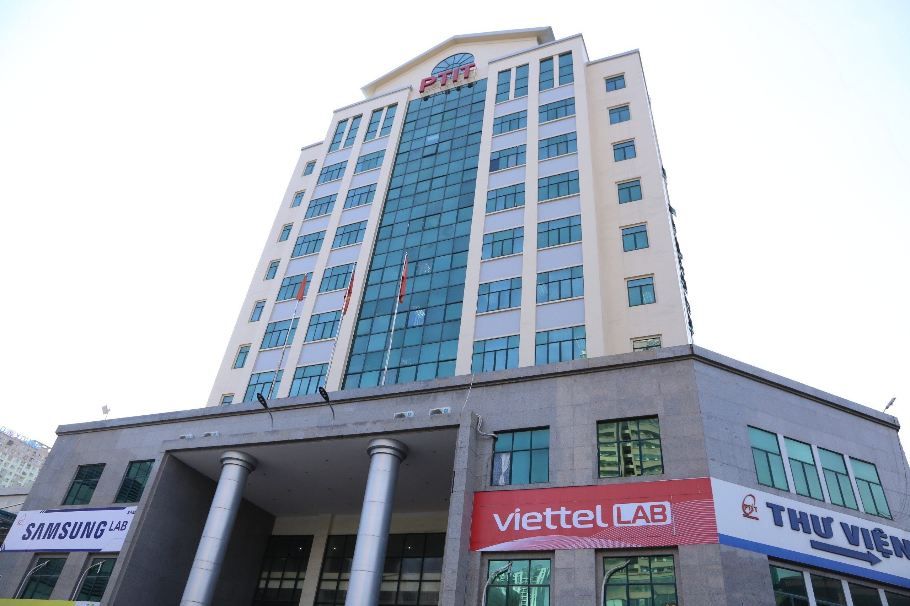
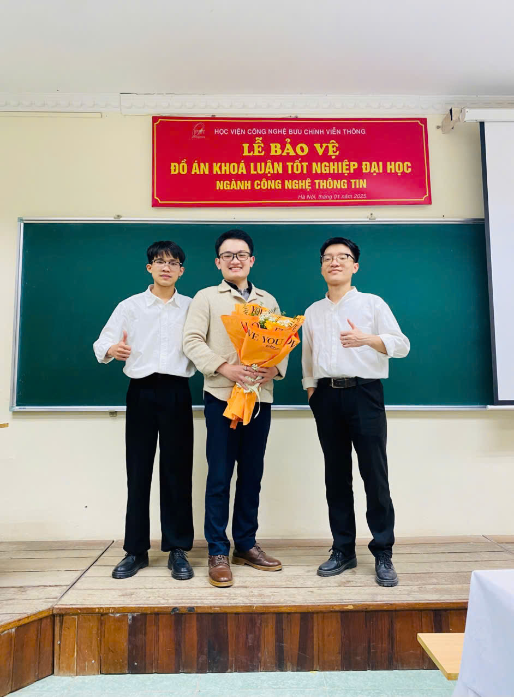

PROFILE / 01
Working
Nguyễn Quang Hảo
Software Developer- Current
- Rorze Robotech
- Location
- Vietnam · GMT+7
- Focus
- Web · Automation · AI
Hi, I'm Hảo
I'm a Software Developer who enjoys turning concrete problems into clear, practical tools. This is a small corner where I share my work, what I'm learning, and the projects I've built.
Nguyễn Quang Hảo
Software DeveloperNOWSoftware Developer08.2025 - Present
WORKING ATRorze RobotechVietnam · GMT+7
THIS PAGEA quiet cornerA place to document the journey
01 About
ABOUT / PERSONAL NOTEHi, I'm Hảo - or Haohao if we already know each other. I currently work as a Software Developer at Rorze Robotech.
My experience spans systems development, manufacturing data, .NET, and internal automation. Today, I gather requirements and build and improve software that supports management and day-to-day operations.
My English is still a work in progress. I enjoy using it, learning new things, and documenting the journey in a simple, honest way. Thanks for stopping by.
This is simply a short introduction to help people know me a little better. Thanks for taking the time to stop by.
01Understand firstGet the problem right before starting.
02Make it usefulPrioritize what works in the real world.
03Keep learningAlways leave room for a better approach.
02 Experience
WORK / EXPERIENCEEach role has given me a different kind of experience - from data and systems to building software for real-world work.
RORZE ROBOTECH CO., LTD
Developing internal software with a focus on management, automation, and operational efficiency.
RORZE ROBOTECH CO., LTD
Worked with manufacturing data and master-data operations across company systems.
FPT SOFTWARE
An internship focused on learning professional software development practices.
VOYANCE HEALTH LLC
Designed the architecture and developed core functionality for an HTTP server.
03 Toolkit
SKILLS / TOOLKITNot an exhaustive list of everything I've touched - just the tools and approaches that have shaped my journey.
Build web applications and backend functionality, from user interfaces to data processing.
Work with data, HTTP servers, and performance-sensitive components.
Reduce repetitive work and support day-to-day tasks with practical, fit-for-purpose tools.
Projects have also given me opportunities to work with design, architecture, and how products operate in practice.
04 Projects
SELECTED / WORKFrom products in active use to challenges I explored through school and work.

Website · Booking experience · Ba Đình, Hanoi
A website that helps guests explore accommodation, rooms, and services, then submit a booking request through a consistent experience on desktop and mobile.
Graduation project
Researched and developed an intelligent system for monitoring a nationally protected forest.
Core development
An HTTP server with authentication, dynamic content, settings management, file upload/download, and multithreaded processing.
Monitoring
A system that tracks electrical power data and helps monitor key operational metrics.
Automation tool
An automation tool that searches component part numbers and extracts data for day-to-day work.
05 Education
EDUCATION / AWARD

UNDERGRADUATE EDUCATION
HONORS & AWARDS
06 One last note
This is simply a small corner of the internet where you can get to know me a little better. If you'd like to say hello, talk about technology, or see what I'm working on, you can find me here.
haonqptit@gmail.com